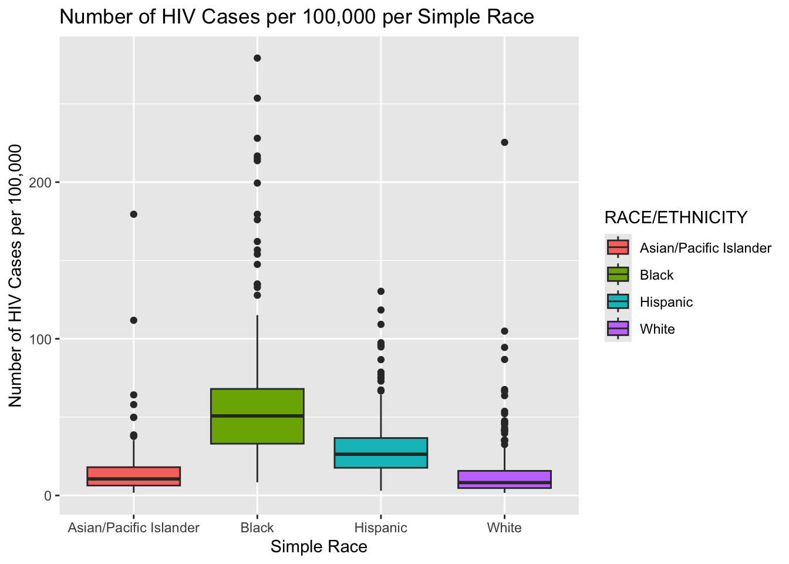
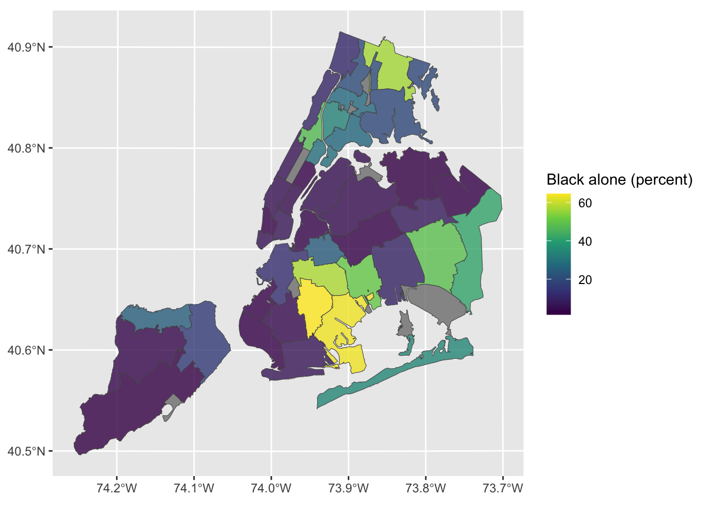

For this week’s blog post, we devoted most of our effort into brainstorming how we’re going to present the data on our website. We tried to put ourselves in the place of someone who has no idea what we’re analyzing and determine the best way to make our findings comprehensible to this person. We decided the best way to begin was by displaying a series of basic plots displaying the most basic aspects of our data. For example, below are two plots. One displays the total number of HIV cases in each borough and the other displays the total number of HIV cases for each race. This seemed like the first logical step because when someone reads that we’re analyzing HIV data, the first thing they probably think is, “How many cases are there?”.
Now that we made these basic plots, we decided the next step is to identify any trends and do slightly below surface-level analysis on them. We made other plots we plan to include on our final website and one trend we noticed is that Brooklyn always had the most total cases for boroughs, and black people always had the most total cases for race. When someone sees these raw totals, the first thing we anticipate them wondering is, “Well, is this just because there are more people in Brooklyn than the other boroughs and more black people than any other race?”. To assuage these concerns, we move to slightly below surface-level analysis, which is adjusting for population. Below are two plots. They are boxplots displaying the number of HIV cases per 100,000 people for each borough and race.

# A tibble: 10 × 1
YEAR
<dbl>
1 2021
2 2020
3 2019
4 2018
5 2017
6 2016
7 2013
8 2012
9 2011
10 2010These plots should answer that basic question of normalizing population. For example, in the boroughs plot, we see the question about total population did have an impact on Brooklyn having the most total HIV cases, as the boxplots display, it has the third highest average number of HIV cases per 100,000, despite having the most total HIV cases, indicating that if all boroughs had the same population, Brooklyn might not have the most total cases. When it comes to race, however, we see population had little-to-no affect; black people had the most total cases and the hgihest number of average cases per 100,000 people.
The next question we anticipate people wondering is, “Do the boroughs with more cases have more black and Hispanic people than boroughs with fewer cases?”. Since black and Hispanic people have more cases on average than white and Asian/Pacific Islanders, it seems logical that the boroughs with more cases have more of those demographics. Below are two plots. Each is a map of New York City, broken down into 42 smaller neighborhoods, based on the locations served by UHF hospitals. The first displays areas based on the proportion of black residents, and the second displays the proportion of Hispanic residents in each neighborhood. The data on proportions came from New York City’s official Environment and Health data portal, one of the datasets we wrote about in our previous blog post and the shapefiles were downloaded online.
Linking to GEOS 3.13.0, GDAL 3.8.5, PROJ 9.5.1; sf_use_s2() is TRUE
Simple feature collection with 43 features and 3 fields
Geometry type: MULTIPOLYGON
Dimension: XY
Bounding box: xmin: 913176 ymin: 120122 xmax: 1067382 ymax: 272844
Projected CRS: Lambert_Conformal_Conic
First 10 features:
id Black alone (percent) Hispanic alone (percent)
1 0 NA NA
2 101 11.3 45.6
3 102 56.6 27.7
4 103 20.2 66.8
5 104 19.4 53.3
6 105 27.1 67.0
7 106 33.5 61.0
8 107 26.4 69.8
9 201 3.4 21.9
10 202 12.7 14.8
geometry
1 MULTIPOLYGON (((945656 1323...
2 MULTIPOLYGON (((1012516 256...
3 MULTIPOLYGON (((1030514 251...
4 MULTIPOLYGON (((1020336 251...
5 MULTIPOLYGON (((1030534 251...
6 MULTIPOLYGON (((1005404 247...
7 MULTIPOLYGON (((1012320 241...
8 MULTIPOLYGON (((1019508 231...
9 MULTIPOLYGON (((1005154 200...
10 MULTIPOLYGON (((990948 1784... id Black alone (percent) Hispanic alone (percent)
1 0 NA NA
2 101 11.3 45.6
3 102 56.6 27.7
4 103 20.2 66.8
5 104 19.4 53.3
6 105 27.1 67.0
7 106 33.5 61.0
8 107 26.4 69.8
9 201 3.4 21.9
10 202 12.7 14.8
11 203 57.5 14.1
12 204 50.5 37.7
13 205 3.0 41.9
14 206 4.2 13.0
15 207 64.5 10.2
16 208 63.3 9.3
17 209 2.2 16.7
18 210 6.5 12.0
19 211 24.1 39.6
20 301 10.6 63.9
21 302 47.1 25.3
22 303 28.7 45.2
23 304 5.8 15.1
24 305 2.8 9.1
25 306 5.2 16.6
26 307 4.4 10.1
27 308 2.5 8.5
28 309 6.6 20.4
29 310 5.9 8.7
30 401 4.9 23.9
31 402 4.6 51.6
32 403 1.7 17.9
33 404 2.8 13.9
34 405 2.3 29.2
35 406 7.7 17.8
36 407 9.9 33.9
37 408 48.6 17.2
38 409 41.5 14.3
39 410 34.4 23.3
40 501 24.7 35.6
41 502 16.2 20.9
42 503 3.7 15.1
43 504 1.5 12.3
geometry
1 MULTIPOLYGON (((945656 1323...
2 MULTIPOLYGON (((1012516 256...
3 MULTIPOLYGON (((1030514 251...
4 MULTIPOLYGON (((1020336 251...
5 MULTIPOLYGON (((1030534 251...
6 MULTIPOLYGON (((1005404 247...
7 MULTIPOLYGON (((1012320 241...
8 MULTIPOLYGON (((1019508 231...
9 MULTIPOLYGON (((1005154 200...
10 MULTIPOLYGON (((990948 1784...
11 MULTIPOLYGON (((1001656 180...
12 MULTIPOLYGON (((1014886 176...
13 MULTIPOLYGON (((984104 1711...
14 MULTIPOLYGON (((991748 1610...
15 MULTIPOLYGON (((994620 1703...
16 MULTIPOLYGON (((1003482 151...
17 MULTIPOLYGON (((987734 1507...
18 MULTIPOLYGON (((1004698 152...
19 MULTIPOLYGON (((1011406 191...
20 MULTIPOLYGON (((995374 2381...
21 MULTIPOLYGON (((995304 2324...
22 MULTIPOLYGON (((1004316 223...
23 MULTIPOLYGON (((986050 2208...
24 MULTIPOLYGON (((995736 2156...
25 MULTIPOLYGON (((981976 2096...
26 MULTIPOLYGON (((987768 2084...
27 MULTIPOLYGON (((982158 1999...
28 MULTIPOLYGON (((985342 1976...
29 MULTIPOLYGON (((981154 1948...
30 MULTIPOLYGON (((1000104 208...
31 MULTIPOLYGON (((1019274 227...
32 MULTIPOLYGON (((1032688 209...
33 MULTIPOLYGON (((1054996 206...
34 MULTIPOLYGON (((1023838 194...
35 MULTIPOLYGON (((1045958 202...
36 MULTIPOLYGON (((1023868 176...
37 MULTIPOLYGON (((1050504 185...
38 MULTIPOLYGON (((1055226 171...
39 MULTIPOLYGON (((1034042 156...
40 MULTIPOLYGON (((934682 1634...
41 MULTIPOLYGON (((952606 1507...
42 MULTIPOLYGON (((951532 1573...
43 MULTIPOLYGON (((919410 1219...We anticipate that readers will have their next concerned assuaged by this map. In case anyone isn’t familiar with NYC’s geography, the western island is Staten Island, the southwestern portion of the city is Brooklyn, the southeastern portion is Queens, the northwestern portion is Manhattan, and the northeastern portion is the Bronx. As displayed by the maps, Brooklyn, the Bronx, and Manhattan, the areas with the highest total and average number of cases, have the most black and Hispanic residents, while Queens and Staten Island, which have the fewest cases, have fewer black and Hispanic residents.
The next question we anticipate readers to ask is why do areas with more black and Hispanic residents have more HIV cases and this is what we will continue to analyze for the duration of the semester.
library(sf)
library(readr)
library(here)
shape <- st_read(here::here("dataset", "NYC_geography-master", "NYC_geography-master", "uhf34_shapefiles", "CHS_UHF_34_DOHMH_2004.shp"), quiet = TRUE)
shape <- shape |> rename(GeoID=UHFtxt) |> select(GeoID) |> filter(GeoID!=0)
insurance <- read_csv(here::here("dataset", "NYC EH Data Portal - Health insurance (adults) (filtered)(1).csv"),
col_types = cols(GeoID = col_character()))
insurance <- insurance |> mutate(percent_only = str_extract(Percent, "^[0-9.]+"))
insurance_uhf <- insurance |> filter(!(Geography %in% c("New York City", "Bronx", "Brooklyn", "Manhattan", "Queens", "Staten Island")))
##################################################################################################
insurance_uhf_filter_2021<-insurance_uhf |> filter(TimePeriod=="2021")|>select(GeoID, percent_only)
insurance_uhf_filter_2020<-insurance_uhf |> filter(TimePeriod=="2020")|>select(GeoID, percent_only)
insurance_uhf_filter_2019<-insurance_uhf |> filter(TimePeriod=="2019")|>select(GeoID, percent_only)
insurance_uhf_filter_2018<-insurance_uhf |> filter(TimePeriod=="2018")|>select(GeoID, percent_only)
insurance_uhf_filter_2017<-insurance_uhf |> filter(TimePeriod=="2017")|>select(GeoID, percent_only)
insurance_uhf_filter_2016<-insurance_uhf |> filter(TimePeriod=="2016")|>select(GeoID, percent_only)
insurance_uhf_filter_2013<-insurance_uhf |> filter(TimePeriod=="2013")|>select(GeoID, percent_only)
insurance_uhf_filter_2012<-insurance_uhf |> filter(TimePeriod=="2012")|>select(GeoID, percent_only)
##################################################################################################
joined_2021 <- shape |> left_join(insurance_uhf_filter_2021, by = "GeoID") |> mutate(percent_only = as.double(percent_only))
joined_2020 <- shape |> left_join(insurance_uhf_filter_2020, by = "GeoID") |> mutate(percent_only = as.double(percent_only))
joined_2019 <- shape |> left_join(insurance_uhf_filter_2019, by = "GeoID") |> mutate(percent_only = as.double(percent_only))
joined_2018 <- shape |> left_join(insurance_uhf_filter_2018, by = "GeoID") |> mutate(percent_only = as.double(percent_only))
joined_2017 <- shape |> left_join(insurance_uhf_filter_2017, by = "GeoID") |> mutate(percent_only = as.double(percent_only))
joined_2016 <- shape |> left_join(insurance_uhf_filter_2016, by = "GeoID") |> mutate(percent_only = as.double(percent_only))
joined_2013 <- shape |> left_join(insurance_uhf_filter_2012, by = "GeoID") |> mutate(percent_only = as.double(percent_only))
joined_2012 <- shape |> left_join(insurance_uhf_filter_2012, by = "GeoID") |> mutate(percent_only = as.double(percent_only))
##################################################################################################
all_data <- bind_rows(
joined_2021,
joined_2020,
joined_2019,
joined_2018,
joined_2017,
joined_2016,
joined_2013,
joined_2012
)
##################################################################################################
# Global min and max for color scale
global_min <- min(all_data$percent_only, na.rm = TRUE)
global_max <- max(all_data$percent_only, na.rm = TRUE)
##################################################################################################
ggplot() +
geom_sf(data = joined_2021, aes(fill = percent_only), alpha = 0.8) +
scale_fill_viridis_c(option = "D", limits = c(global_min, global_max)) +
labs(title = "2021")
ggplot() +
geom_sf(data = joined_2020, aes(fill = percent_only), alpha = 0.8) +
scale_fill_viridis_c(option = "D", limits = c(global_min, global_max)) +
labs(title = "2020")
ggplot() +
geom_sf(data = joined_2019, aes(fill = percent_only), alpha = 0.8) +
scale_fill_viridis_c(option = "D", limits = c(global_min, global_max)) +
labs(title = "2019")
ggplot() +
geom_sf(data = joined_2018, aes(fill = percent_only), alpha = 0.8) +
scale_fill_viridis_c(option = "D", limits = c(global_min, global_max)) +
labs(title = "2018")
ggplot() +
geom_sf(data = joined_2017, aes(fill = percent_only), alpha = 0.8) +
scale_fill_viridis_c(option = "D", limits = c(global_min, global_max)) +
labs(title = "2017")
ggplot() +
geom_sf(data = joined_2016, aes(fill = percent_only), alpha = 0.8) +
scale_fill_viridis_c(option = "D", limits = c(global_min, global_max)) +
labs(title = "2016")
ggplot() +
geom_sf(data = joined_2013, aes(fill = percent_only), alpha = 0.8) +
scale_fill_viridis_c(option = "D", limits = c(global_min, global_max)) +
labs(title = "2013")
ggplot() +
geom_sf(data = joined_2012, aes(fill = percent_only), alpha = 0.8) +
scale_fill_viridis_c(option = "D", limits = c(global_min, global_max)) +
labs(title = "2012")